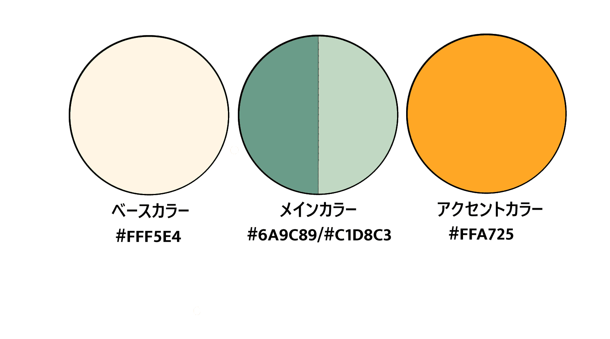

-
概要
クッキーに入れる材料を選択して好きなクッキーを作成する簡単なシミュレーションゲーム。「調理を始める」ボタンを押すと、質問が表示され、ユーザーが選択肢を選ぶことで、順番に処理が進みます。イラストはフリーのものを使用しています。
-
目的
自身のスキルを磨くためにJavaScriptの練習として作成しました。if文の構成やクリックイベントなど基本的な動作を入れ込み、少しでも楽しんでもらえるよう完成形を4つ作成しました。今後選択肢を増やしたり完成形を増やしていく予定です。
-
プログラムの流れ
-
１，ゲーム開始
調理開始ボタンをクリックするとansStart()が実行される。
調理開始ボタンを非表示にし、ansArea（質問エリア）を表示。
setQuestion("チョコチップを入れますか？", "入れる", "入れない", "cocoa", "plainCookie"); が実行され、最初の質問をセットされる。
-
２，選択肢を選ぶ
selection(next)が実行され次の質問、結果が決定する。
チョコチップを入れますか？に「入れる」を選択すると「ココアを入れますか？」の質問に進む。「入れない」を選択した場合プレーンクッキーが完成する。
「ココアを入れない」を選ぶと「抹茶パウダーを入れますか？」の質問に進む。
-
３，クッキーの完成
選択結果に応じて完成したクッキーが表示される。
displayResult(cookieType, message) が実行され、クッキーの種類と完成メッセージが表示される。
-
４，ゲームをリセットして最初からプレイする
もう一度調理するボタンをクリックすると resetGame() が実行され、最初からゲームが開始される。
-
１，ゲーム開始
-
配色
 -
制作期間
2日（デザイン素材探し半日、コーディング1日半）
-
使用ツール
Visual Studio Code